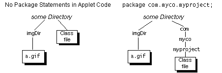

Feedback Form
|
|
Start of Tutorial > Start of Trail > Start of Lesson |
Search
Feedback Form |
Whenever an applet needs to load some data from a file that's specified with a relative URL (a URL that doesn't completely specify the file's location), the applet usually uses either the code base or the document base to form the complete URL. The code base, returned by theAppletgetCodeBasemethod, is a URL that specifies the directory from which the applet's classes were loaded. The document base, returned by theAppletgetDocumentBasemethod, specifies the directory of the HTML page that contains the applet.Unless the
<APPLET>tag specifies a code base, both the code base and document base refer to the same directory on the same server. For example, in the figure in Test Driving an Applet, the code and document bases would both specify the someDirectory directory.
Data that the applet always needs, or needs to rely on as a backup, is usually specified relative to the code base. Data that the applet user specifies, often by using parameters, is usually specified relative to the document base.
The
Note: For security reasons, browsers limit the URLs from which untrusted applets can read. For example, most browsers don't allow untrusted applets to use ".." to get to directories above the code base or document base. Also, since untrusted applets can't read files except those on the applet's originating host, the document base isn't generally useful if the document and the untrusted applet are on different servers.Appletclass defines convenient forms of image-loading and sound-loading methods that let you specify images and sounds relative to a base URL. For example, assume an applet is set up with one of the directory structures shown in the following figure. To create an
Imageobject using thea.gifimage file underimgDir, the applet can use the following code:Image image = getImage(getCodeBase(), "imgDir/a.gif");
|
|
Start of Tutorial > Start of Trail > Start of Lesson |
Search
Feedback Form |